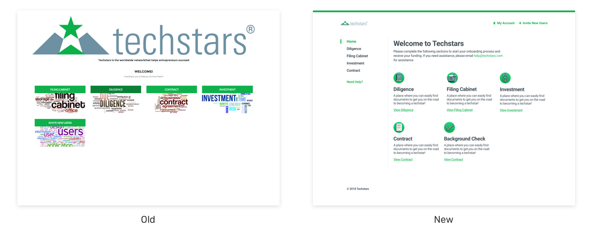

<body class="white {{ page.class }} ">
	{% include nav.html %}
	<section id="hero" class="">
		<div class="container-text">
			<div class="hero-text">
				<h1 class="wow fadeInUp" data-wow-delay=".2s">Designing For Scale at Techstars</h1>
			</div>
		</div>
		<div class="container-img container mob-no">

					<video class="wow fadeInUp" data-wow-delay=".4s" src="../assets/img/ts-vid.mp4" type="video/mp4" autoplay loop muted></video>

		</div>
		<div class="container-text">
			<h2 class="mob-no">Summary</h2>
			<p class="lead">Techstars is the worldwide network that helps entrepreneurs succeed. We have hundreds of thousands of startup founders, investors and mentors in our network, and 30+ web products to meet their needs.</p>

			<p class="lead">I currently lead the user experience and digital strategy at Techstars. As we continue to grow as a company and diversify our revenue, I’ve worked to build a scalable design system and optimize our digital touchpoints.</p>
			<h3>Highlights</h3>
			<ul>
				<li>Built and maintain Techstars' design library</li>
				<li>Generated $66M in enterprise lead pipeline through a design-first approach to Techstars web products</li>
				<li>Revamped Techstars onboarding process for our accelerator companies</li>
			</ul>

			<h2>Building the Techstars Design System</h2>

			<p class="lead">What started out as a single accelerator in Boulder, CO, Techstars has scaled to over 150 countries worldwide, and in the process we'd amassed 10 years of inconsistent styles, branding, and typography along the way.</p>

			<p class="lead">As a first step in providing a consistent user and brand experience, I conducted an audit of our digital properties to see what we were dealing with. When it was all said and done, I ended up with 30+ web products built over multiple tech stacks, with
				dozens of colors and fonts in the mix.</p>
		</div>

		<div class="container-img container">

			
				<figcaption class="text-center small" style="margin-top: 40px;">An audit of our web products shows that everything is all over the place</figcaption>
		</div>
		<div class="container-img container">

			
				<figcaption class="text-center small" style="margin-top: 40px;">All the different branding/styles used on Techstars web properties</figcaption>
		</div>

		<div class="container-text">
			<p class="lead">I set out to create a simplified system with the following goals in mind:</p>
			<h3>Consistency</h3>
			<p class="lead">How do we provide a cohesive web experience? At the very least, how do we make sure users don't have to wonder if they're still on a Techstars-owned domain?</p>
			<h3>Extensibility</h3>
			<p class="lead">Techstars co-brands several of it's products with companies like Google, Amazon, and Microsoft. In addition, we have thousands of alumni companies that have gone through our programs, how does Techstars become a vessel to let these brands shine without
				stealing the spotlight?</p>
			<p class="lead">Also, we have several community leaders, stakeholders, and outside agencies who work with Techstars. How do we empower them to build the best possible experiences on their own without being a bottleneck?</p>
			<h3>Scalability &amp; Speed</h3>
			<p class="lead">Lastly, the company is scaling at an incredibly rapid pace, how do we build a system to grow with it? And how do we build a solid foundation so we don't have to reinvent the wheel every time we kick off a new web project?</p>

		</div>
			<div class="container-img container">

				
						<figcaption class="text-center small" style="margin-top: 40px;">Some of the new Techstars design system</figcaption>
			</div>
				<div class="container-text">
			<p class="lead">The result was a super streamlined design system that could easily extend itself to our many products:</p>

		</div>

		<div class="container-img container">

			
					<figcaption class="text-center small">Redesigned Techstars Blog</figcaption>
		</div>

		<div class="container-img container">

			

		</div>
		<div class="container-img container">

			
							<figcaption class="text-center small">Using a modular approach to components allows us to design FAST</figcaption>
		</div>

		<div class="container-text">
			<h2>Redesiging the onboarding app for accelerator companies</h2>
			<p class="lead">The accelerator onboarding app is the first digital touchpoint companies have with Techstars after being accepted into our accelerator programs. In addition to being pretty hideous, there were numerous usability issues with the app.</p>
			<p class="lead">After observing users go through the onboarding process, we discovered they found it difficult to know 1) where to begin and 2) where they left off. In addition, The onboarding process was originally managed by the Techstars legal &amp; engineering teams, so there was tons of technical and legal jargon that was super confusing for founders. </p>
		</div>

		<div class="container-img container">

			
		</div>

		<div class="container-text">

			<p class="lead">We added a sidebar to encourage a sequential completion of steps, as well as used plain language and as a result saw an increase in users that completed the onboarding process the first time around, as well as a decrease in reaching out for additional assistance.</p>
		</div>

		<div class="container-text">
			<h2>Improving Conversion Rates</h2>
			<p class="lead">Despite a 24% conversion rate on our main corporate contact form (which on the surface is REALLY good), through testing we saw that our forms saw significant dropoff throughout the funnel.</p>
		</div>
		<div class="container-img container">

			
			<figcaption class="text-center small" style="margin-top: 32px">The enterprise persona funnel</figcaption>
		</div>
	<div class="container-text">
			<p class="lead">When looking at each step of the funnel a little closer, we discovered that a third of users that started the form ultimately abandoned it.</p>
		</div>
		<div class="container-img container">

			
		</div>
		<div class="container-text">
			<p class="lead">We identified that 76% of users that dropped off, did so because of a single field asking users to self-identify.</p>
			<p class="lead">We A/B tested a version of this form without this field and saw a 25% increase in conversions as a result.</p>

		</div>
	</div>
</section>
